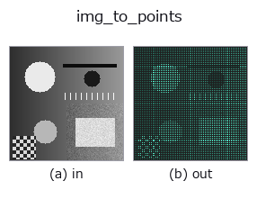

bridge op• Data kinds: image → points
• Call: fullseye.apply(img, "img_to_points", a=0.5, b=0.5) (the 2-D model is one image plus two scalar knobs a,b∈[0,1])

*The figure is the actual output on a synthetic 128×128 input. Left: input, right: output. Point clouds are drawn as a top-down scatter (brightness = z), 1-D series as a line plot, volumes as the maximum-intensity projection along z, videos as the middle frame, complex images as magnitude; return values that are not pictures are shown as the values themselves.*
Sweeping knob a (0.1 / 0.5 / 0.9, the other knob at its default):
▸ img_to_points: knob a sweep (docs site)
Sweeping knob b (0.1 / 0.5 / 0.9, the other knob at its default):
▸ img_to_points: knob b sweep (docs site)
On other images (synthetic scene / photo / coins. Top row: inputs, bottom row: their outputs. Knobs at default):
▸ img_to_points: other inputs (docs site)
*The 4th column is a colour (H,W,3) input. This op handles colour without crossing channels (it does not convolve the colour channel as a third spatial axis).*
Read the image as a height field and turn it into an (x, y, z) point cloud (N,3).
Maps each pixel (row, col) to 1 point (x, y, z) = (col * 10/W, row * 10/H, value * 10 * s) —— coordinates in which the image width and height are normalised to a box of side length 10 (POINTS_BOX). The radii, bounding boxes and grid resolutions bound by the point-cloud op bridges (tb_*) assume this scale (the chained fuzzer's seed [0,10)^3), so passing pixel coordinates as they are leaves the neighbourhoods of the radius-based ops empty and the occupancy grid all 0 (measured). To get back to pixels, x * W / 10, y * H / 10. The column convention is the same as camera.depth_to_points, (x, y, z) —— the reverse of (z, y, x) in reprconv, so when passing to that family, convert at an entry such as tb_points_zyx_to_keypoints_uv.
• a → height factor s = 0.25 + 1.75 * a (1.125 at a=0.5. For an image with range [0,1], the range of z is of the same order as x, y, [0, 11.25], and the point-cloud ops see "terrain" rather than "a plane").
• b → decimation stride stride = 1 + int(b * 3) (2 at b=0.5. For 128×128, 4,096 points. b=0 gives every pixel, b=1 gives 1/16).
• Returns: (N, 3) float64, N = ceil(H/stride) * ceil(W/stride). Never empty.
• The order is row-major and deterministic. The same input gives the same array.
Where to use: the entry for trying the point-cloud ops (tb_alpha_shape_boundary / tb_estimate_point_normals / tb_points_to_voxel …) from 1 single image. Normalise a DEM (elevation map) to value = elevation / max elevation and pass it, and it becomes a terrain point cloud as is.
• gallery2d_bridge family guide
• Sample-data catalog (download URLs / licences) — 2-D uses skimage.data (BSD/public domain) plus synthetic images; 3-D lists download URLs for real data sources (Stanford, PDS, …).
• Operator provenance and references — the sources of the research/methods this op family came from.
• The canonical algorithm (author, year) and its uses are named in the family usage guide above.
The program below has been verified to run (same input as the figure). In Studio's help this block becomes buttons that load and run it on the spot.
img_to_points 0.50 0.50
▸ Load this pipeline · Load & run
• gallery2d_bridge — py -3.11 examples/gallery2d_bridge.py
points as input)identity · tb_points_to_voxel · tb_estimate_point_normals · tb_iss_keypoints · tb_project_points · tb_render_point_depth · tb_statistical_outlier_removal · tb_radius_outlier_removal
bridge)img_to_keypoints · img_to_signal · img_to_projection_profile · img_to_counts · img_to_matrix · img_to_video · img_to_volume · img_to_lightfield
*Provenance: ops.py — 2D operator registry. This per-op note is generated by tools/opdocs.py md (do not hand-edit).*
© 2026 Kazufumi Furuse — Fullseye operator documentation. Licensed under Apache-2.0.